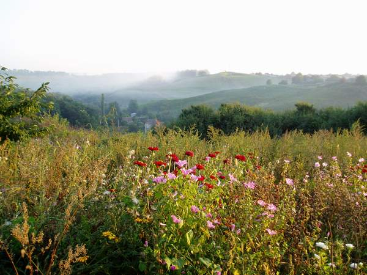
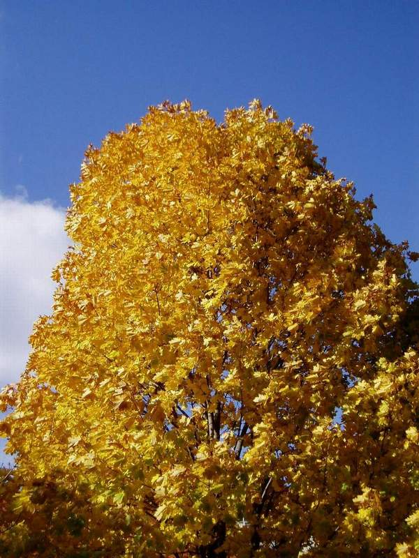
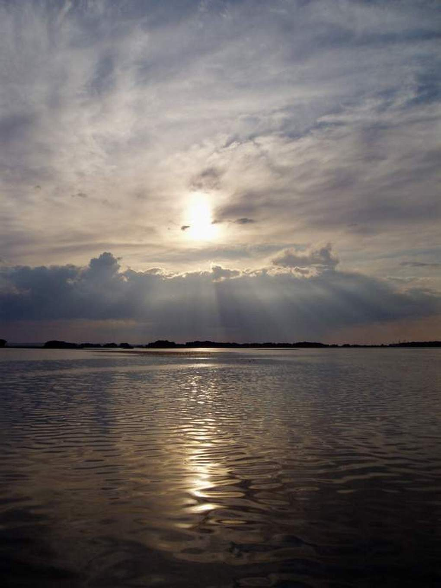

Поезія
Вірші зі збірки «Заворожений степом» (2002).
Позначкою ♪ відмічені вірші, що стали піснями.
Степ і пори року
Пробудження
«як тільки іноді хочеться весни…»
Якщо і є над нами вища сила,
То це весни пробудження щасливе.
Ви ж подивіться, як розрісся день,
Прислухайтесь до милих щебетань.
Хвалу Великодню співа сім'я бджолина.
А у гнізді лелечина сім'я
Чекає дня народження дитини.
А сад! Бруньки — немов вулкани,
До вибуху готові повсякчас.
Яріє лан, розшитий сошниками,
І жайвір з висі промовля до нас.
О! Це і є над нами тая сила,
Що величається пробудженням щасливим!

Малюнок до теми з першої версії сайту
Гречка відцвітає
«відчуйте смак літа!»
Нахилився вечір,
Землю обійма,
Цвіт злітає з гречки,
А тебе нема.
Може, заблукала,
Через поле йшла?
Може, зір не стало,
Темна ніч була?
Гречка відцвітає,
Молодість мина,
А тебе немає...
В серці — сивина.
Сивина у полі, сивина,
То так біло гречка зацвіла.
То літа твої й мої,
То літа твої й мої,
Стеляться туманом по землі.
♪ стала піснею — її виконувала поетеса-піснярка В. Кондратенко
Дід клепає косу
«чудовий вірш»
Любив малим я слухати клепання,
Крізь сон розмірене: цок, цок,
То дід ще до пташиного вставання
Гострив косу на росяний лужок.
В торбину баба клала картоплину,
Сальце, часник, перепічки шматок.
Й наказувала: «Не буди дитину.
Нехай поспить ще любий онучок».
«Е-е, бабо. Це уже не діло.
Онук наш, правда, ще маленький мужичок,
Та, бачиш, саме косовиця підоспіла,
Нехай звика, я нагострив йому гачок».
...Встаю, в пітьмі знаходжу вудку.
Пшеницю дід ще звечора зварив.
О, цього ранку я вже ніколи не забуду,
Як вперше у ставку карасика зловив,
Як з дідом ми спустошили торбину,
Як перший промінець покіс позолотив...
Я народився в літню жнивну днину,
Й на все життя клепання полюбив.
Осінній грім
Осінній грім, жовтневий грім —
Природи дивина.
Немов би та, немов би та
Надрання сивина.
І блиск вночі, і блиск вночі
На спілий листопад,
Як крик сичів, як крик сичів
Лякає вийти в сад.
Черешню в нім, черешню в нім
Первоцвітку п'янку
Осінній грім, жовтневий грім
Спокусливо торкнув.
Вона одна, вона одна
В адамовім саду
Весни фату, весни фату
Не скинула до сну.
Ударив грім, осінній грім —
Черешню роздягнув...
Сичі в саду, сичі в саду
Ридма кричать: «Пу-гу!»
Осінній вальс
Вальс в осіннім саду,
Крутиться, крутиться листя,
Клен з берізкою у танку —
Це ж бо їх недоспівана пісня.
Молоді і стрункі,
І любов'ю повінчані,
А роки, а роки,
Пролетять непомічені.
Сад цвіте, в молодому снігу,
То не цвіт — передзимна віхола.
Вихором крутяться пари в танку,
Аплодує усе їм довкола.
Ранній сніг впав до ніг,
Припорошив доріженьку,
Білий сніг, білий сніг
Закосичив берізоньку.
Молоді і стрункі,
І любов'ю повінчані,
А роки, а роки,
Пролетять непомічені.

Малюнок до теми з першої версії сайту
Червона калина
Клене сонцечубий,
Клене, дубів брате,
Ти порадь калині,
Де тепла їй взяти.
Хто у злу завію
Калину зігріє?
Хто у темну нічку
Бідну пожаліє?
Вабить ягідками
Червона калина,
А як їх не стане —
Всі її покинуть.
Тільки вітер лютий
Гнутиме додолу,
Тільки я заплачу,
Ідучи додому.
♪ стала піснею «Калина»
Рідний край
Київ
«ще один твір про чудове місто»
Вже так багато співано тобі,
Що голос мій загубиться у тому,
Але щоразу, любий, по весні,
При зустрічі з тобою забуваю втому.
Я тут навчався, трави пив,
Історію села шукав уперто,
Я зачарований тобою жив,
І ладен зачарований померти.
Та не про смерть мої пісні:
До тебе, любий Києве,
Я часто лину уві сні,
Як птах до моря синього.
На крутизну Дніпрових круч:
До мудрого й напівсвятого,
До невмирущого й земного —
Князя великого з хрестом обіруч.
Нуртує в наших душах повінь,
Минувшиною моляться уста...
І час настав усім прийти на сповідь
До Володимира, і до Хреста.

Світлина з першої версії сайту
Скіфія моя
Жнивна ніч у полі,
Перепілок спів.
Силуети долі
У пітьмі віків.
Скіф коня стриножив,
Поруч мене сів:
«Поговорим, друже,
Під пташиний спів.
Про царя Атея,
Думаю, чував?
Дві доби уже я
З коня не вставав.
З військом македонським
Смертно бились ми,
Багатьом на очі
Присмерки лягли.
Десь в кибитках діти,
Матері... Дружини
Полинем укриті
Ждуть богатирів.
Ми відродим славу,
Скіфію свою.
Заплету я гриву
Вірному коню».
Солов'ї-літа
Вечорова тиша
У садку принишкла,
Розспівались ніжно
Ранні солов'ї.
Напоїли піснею,
Піснею займистою
Юності провісники —
Наші солов'ї.
Вечори весняні —
Знахарі кохання,
Яблуневим цвітом
Росяться літа.
У садку любові
З солов'ями в змові
І моє крилате
Серденько літа.
Напоєне піснею,
Піснею займистою,
Ех, літа юначі,
Солов'ї — літа!
♪ стала піснею
Кохання
Я вас кохаю
Я Вас кохаю,
Та не смію,
Це ніжне слово
Вам сказать.
Як бачу Вас:
Мовчу, німію,
Готовий слід
Ваш цілувать.
Руки
Є жінки з звичайними обличчями,
А на руки глянеш — і замреш.
І за нашим чоловічим звичаєм
На коліна перед ними упадеш.
І відчуєш, як в душі відтало,
Як рубцюються старі жалі.
І гіркот в житті немов не стало,
Бо в твоїх руках рука її.
Є жінки з красивими обличчями,
А на руки глянеш — і збагнеш:
Скільки болю, скільки зради, відчаю
Ти із них у серці понесеш.
Лиш би ти схотів
Між нами світ снігів,
Зими завали.
Лиш би ти схотів —
Вони б розтали.
Між нами відстані віків,
Розлук цунамі.
Лиш би ти схотів —
Розвів би їх руками.
Між нами сутність віщих снів,
Пророцтв загадки.
Лиш би ти схотів —
Знайшов би їм розгадки.
Пам'ять війни
22-ге червня
Червнева рань солодкого спокою.
Найдовший день не народився ще,
А небо вже, розчахнуте війною,
Топило землю бомбовим дощем.
Стогнав Дніпро, закутаний димами.
Вагітне хлібом поле затрясло.
Якими можна виправдать словами
Безпечність нашу, й рокове число?
Люд ще не знав, розбуджений війною,
Якою буде куплена ціною
Далека, але вірна перемога.
Й чи буде в нас на неї змога?
Червневий жах потроїв наші сили,
І віру нам стократно укріпив.
Тепер всі знали: маємо ми сили,
І кара ворогу — де б не ступив.
Отак й жили усі чотири роки:
Від втрат до перемог і відбудов,
Свої рівняли по загиблим кроки,
І мир жаданий в наший дім прийшов.
На війни всі — табу!
Травневі дні, звитяжні і квітучі,
Піснями салютують солов'ї.
День Перемоги сонячно-урочий,
Як в сорок п'ятім по війні.
Як і тоді, з очей зринають сльози,
Як і тоді, гармонь веде пісні.
Перемогли усі смертельні грози,
Мережать чисте небо журавлі.
В тих журавлях — загиблих наших душі,
В курликанні — живі їх голоси.
Цвітуть залюблено медові груші,
В їх цвіті — пахощі коханої коси.
Святкуй, народе мій. Непереможний,
Несхибно стій за волю, за судьбу!
І буде мати, буде отрок Божий.
Творець, пошли на війни всі — табу!
↑ вгору · до прози →